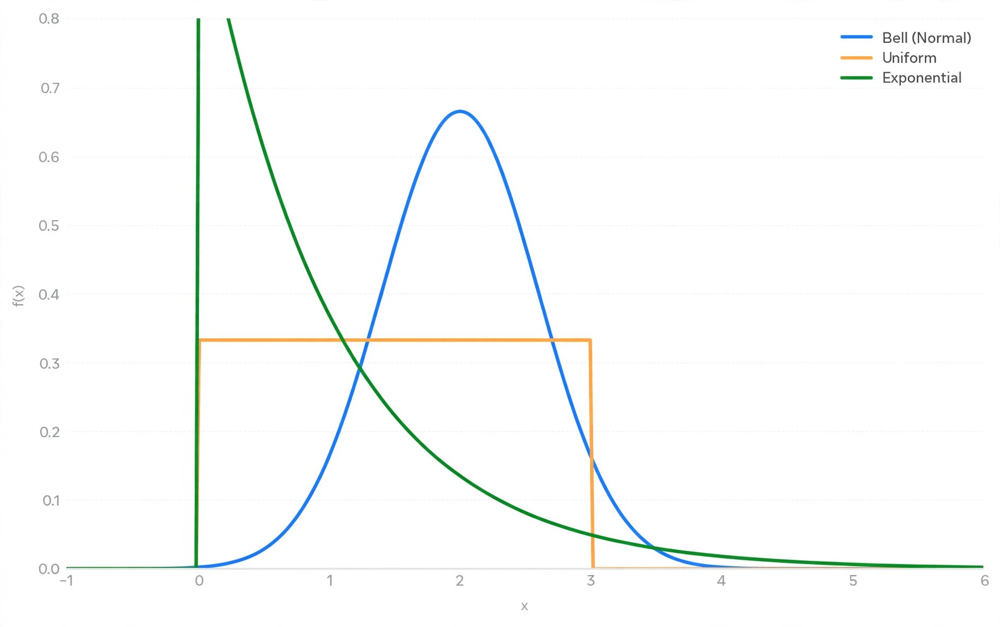

Probability distribution

[Image: Several probability density curves — normal, uniform and exponential — plotted together]
A probability distribution describes how the values of a random variable are distributed: it specifies the probability of each outcome (for discrete variables, via a probability mass function) or of ranges of outcomes (for continuous variables, via a probability density function).
Distributions are characterised by quantities such as their mean, variance, skewness and moments. Familiar examples include the binomial, Poisson, uniform, exponential and normal distributions.
Uses
Choosing a distribution is the first step in modelling uncertain quantities — counts of arrivals, lifetimes of components, measurement errors, or returns on an investment. Sums of independent variables are described by convolution, and the central limit theorem explains the ubiquity of the normal case.
In Bayesian statistics distributions also represent uncertainty about parameters themselves, not only about data.